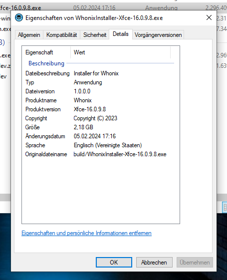
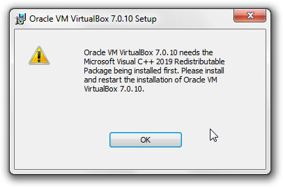

We believe security software like Whonix needs to remain Open Source and independent. Would you help sustain and grow the project? Learn more about our 14 year success story and maybe DONATE!
Dev/Linux InstallerDesignDev/Windows StarterPrevious page: Dev/Linux InstallerIndex page: DesignNext page: Dev/Windows StarterWhonix Windows Installer - Design Documentation
The Whonix Windows Installer was designed as a simple and fast way to set-up Whonix on a system running Microsoft Windows.
Design / Features
WhonixStarter(.exe):
- new implementation of whonix.exe in lazarus (without NET framework)
- platform independent ( later linux/mac version possible )
- ui consists of two forms ( main & error )
- main form has two buttons for start/stop and manage Whonix VMs
- error form pops up if virtualbox is missing
WhonixStarterSetup.msi:
- installs windows version of WhonixStarter
- adds start menu entry
- adds desktop shortcut
- uninstall over Windows "Programs and Features" tool
WhonixSetup(.exe):
- ui consists of a main form with several pages guiding the user through the installation process
- platform independent ( later linux/mac version possible )
- installs VirtualBox and WhonixOVA
- executes WhonixStarterSetup.msi (Windows only)
- Optionally disables Hyper-V (to improve VirtualBox performance and stability, see https://www.kicksecure.com/wiki/VirtualBox/Green_Turtle_Issue)
- checks installed and only reinstall missing components
- does not uninstall or delete any component
Challenges:
- Whonix
.ovais bigger than 2 GB. - Windows
.cabfiles have a hardcoded 2 GB maximum file size.
Requirements:
- cross compile on Debian (source) for Windows (target)
- building does not require Windows
Build limitations:
- needs Debian bookworm or above because of minihttps://www.whonix.org/w/index.php?title=Dev/Windows_Installer&stable=0mal wixl and lazarus version
flow chart
(1) Whonix-Starter:
lazbuild→WhonixStarter.lpr→WhonixStarter.exewixl→WhonixStarterSetup.wxs→WhonixStarter.exe,WhonixStarterSetup.wxs→WhonixStarterSetup.msi
(2) Whonix-Installer:
lazbuild→WhonixSetup.lpr→WhonixSetup.exeWhonixSetup.exe+ append +Whonix.ova→WhonixSetup-LXQt.exe
misc
Notes
UseVersionInfo WhonixSetup.lpi

Can the following variables be removed if not essential?
OriginalFilename="WhonixInstaller-XYZ-1.2.3.4.exe" <UseVersionInfo Value="True"/>
<MajorVersionNr Value="1"/>The variables aren't essential for functionality.
For reasons of end user confidence it's recommended to keep the version and file information ().
"OriginalFilename" could just be "WhonixInstaller.exe". ( but I like to set the same as the final filename displayed in file browser )
"MajorVersionNr", "MinorVersionNr", "RevisionNr", "BuildNr" is summarized as "FileVersion" by Lazarus. If we delete these values the file version will be 0.0.0.0
I'm not sure in this case if the version refers to the installer or the software being installed.
CI
Whonix-Starter:
- https://github.com/einsiedler90/Whonix-Starter/actions
- https://github.com/Whonix/Whonix-Starter/actions
Whonix-Installer:
- https://github.com/einsiedler90/Whonix-Installer/actions
- https://github.com/Whonix/Whonix-Installer/actions
code signing
TODO - code signing
- only sign stub vs all?
- yubikey 5 fips?
Introduction
EV (extended validation) certificate required to avoid Microsoft SmartScreen Filter warning message.
- https://learn.microsoft.com/en-us/windows/win32/seccrypto/using-signtool-to-sign-a-file
- https://stackoverflow.com/questions/18287960/signing-windows-application-on-linux-based-distros
- https://packages.debian.org/bullseye/osslsigncode
- https://issuetracker.google.com/issues/130343741
- https://www.ssl.com/guide/supported-cloud-hsms-document-signing-ev-code-signing/
- https://github.com/mtrojnar/osslsigncode/issues/34
requirements
- EV code signing for Windows
 authenticode to avoid Microsoft SmartScreen Filter warning message.
authenticode to avoid Microsoft SmartScreen Filter warning message. - cross signing
- build scripts running on Debian Linux
- build result (program) running on Windows 64 bit
- avoid running proprietary closed source software on local build machine
- can be fully automated using build scripts
avoid hardware token (compatibility, hassle)- avoid proprietary closed source device drivers
- ideally avoid non-mainline Linux kernel drivers
- supports signing big files
providers
thalesgroup:
- asked. does not have Linux tools.
Certum:
- https://shop.certum.eu/open-source-code-signing.html Certum Open Source developer certificate - EV extended validation?
- https://www.certum.ng/product/ev-code-signing-in-the-cloud/
- https://shop.certum.eu/ev-code-signing-in-the-cloud.html
- SimplySign cloud-based solution eliminates the need for a physical card and a reader
- https://www.files.certum.eu/software/SimplySignDesktop/Linux-Ubuntu/2.9.8-9.1.6.0/SimplySignDesktop-2.9.8-9.1.6.0-x86_64-prod-ubuntu.bin
- €379.00
sectigo:
- https://sectigostore.com/code-signing/sectigo-ev-code-signing-certificate
- cloud hsm supported?
- $410
certerassl:
- https://certerassl.com/certera-ev-code-signing-certificate
- use existing token
- no cloud hsm
- $309
ssl.com:
- https://www.ssl.com/ev/
- $239
- A) optional proprietary eSigner CodeSignTool
- $20.00 / month (= $240 / year) or $180.00 / year
- eSigner uses ssl.com's own Cloud HSM
- actual file needs to be present to be signed
- https://www.ssl.com/guide/esigner-pricing-for-code-signing/
- When using for example Google Cloud HSM then eSigner is optional.
- minimum price for eSigner:
- bug reports:
- B) optional Google Cloud HSM compatibility
- https://www.ssl.com/guide/supported-cloud-hsms-document-signing-ev-code-signing/
SSL.com's fee for Google Cloud HSM attestation is $500.00 USD.
Google Cloud HSM;
- https://github.com/GoogleCloudPlatform/kms-integrations/blob/master/kmsp11/docs/user_guide.md
- https://github.com/GoogleCloudPlatform/kms-integrations
- https://cloud.google.com/kms/docs/reference/pkcs11-tool
- ( https://cloud.google.com/kms/docs/reference/pkcs11-nginx )
libkmsp11.so
Verification of Code Signing Process
Verification of VirtualBox
VirtualBox for Windows is signed using Microsoft
 Authenticode signatures ("
Authenticode signatures ("signtool").
VirtualBox's digital signature can be verified on the Linux platform
using osslsigncode. Example:
osslsigncode verify -in VirtualBox-*.exe
A script verify
has been added to the virtualbox-windows-installer-binary
repository as a reminder and example how to verify the digital software
signatures on the Linux platform.
Signing Whonix Windows Installer
This document is based on a case where an executable
(hello.exe) is signed using GitHub Actions (CI) and
CodeSigner.
For more details on the test, please refer to this GitHub repository: https://github.com/adrelanos/codesigner-test
When a file (hello.exe) is signed, creating
hello_signed.exe, the goal is to ensure that no additional
modifications, beyond the signing process, have occurred. These could
potentially include the insertion of malicious code.
Overview:
- Original file:
hello.exe - Signed file:
hello_signed.exe - Extracted signature file:
hello_signature.pem - File with reattached signature:
hello_with_signature.exe - File with reattached signature and reset PE header:
hello_with_signature_reset_PE.exe - File with removed signature:
hello_without_signature.exe - File with removed signature and reset PE header:
hello_without_signature_reset_PE.exe pe-header-to-zero
To achieve this, the original file is compared with the signed file in various stages and through different methods. The key stages are as follows:
1. Extract the signature from the signed file using
osslsigncode:
osslsigncode extract-signature -in hello_signed.exe -out hello_signature.pem
2. The original file (hello.exe) is then re-signed using
this extracted signature to create a new file
(hello_with_signature.exe):
osslsigncode attach-signature -sigin hello_signature.pem -in hello.exe -out hello_with_signature.exe
At this point, one would expect hello_signed.exe to be
identical to hello_with_signature.exe. However, it was
discovered that the signing process
(osslsigncode attach-signature) modified the PE header of
the file by adding a PE checksum, thus resulting in a difference between
these two files.
To analyze and understand these differences, a set of tools were
used, including diff, vbindiff,
diffoscope, and readpe. These comparisons
brought to light the change in the PE checksum.
3. In order to make a direct comparison, the PE checksum in
hello_with_signature.exe was reset to 0,
mirroring its original state in hello.exe and
hello_signed.exe. This was achieved using a Python script
named pe-header-to-zero:
pe-header-to-zero hello_with_signature.exe hello_with_signature_reset_PE.exe
After running this script, the newly created file
hello_with_signature_reset_PE.exe was found to be an exact
match to hello_signed.exe.
4. The script pe-header-to-zero was also used on
hello_without_signature.exe to create
hello_without_signature_reset_PE.exe:
pe-header-to-zero hello_without_signature.exe hello_without_signature_reset_PE.exe
It was found that hello_without_signature_reset_PE.exe
was an exact match to the original hello.exe, further
validating the process.
Following this thorough examination, it can be reasonably stated that the signing process did not introduce any unwanted or malicious modifications to the original executable file.
All operations were performed using the osslsigncode
tool.
To install and examine PE headers, the pev tool was
used:
sudo apt install pev
To view the PE checksum, the readpe utility was
used:
readpe hello_signed.exe
readpe hello_with_signature_reset_PE.exe
readpe hello_without_signature_reset_PE.exe
Archived Tasks
do not delete WhonixStarter.msi after installation
"--debug" command line avoids that WhonixStarter.msi gets deleted once Whonix installer gets closed.
https://github.com/einsiedler90/Whonix-Installer/commit/9a27e7f7194afa82da12cd4597e87144594e843e
Microsoft Visual C++ 2019 Redistributable Package Integration

- vc_redist.x64.exe is integrated inside the installer.
- https://learn.microsoft.com/en-us/cpp/windows/latest-supported-vc-redist?view=msvc-170
- https://aka.ms/vs/17/release/vc_redist.x64.exe
- https://github.com/einsiedler90/Whonix-Installer/commit/df9ad3e91f48958fc48f30a8323e547bb4c87bd4
- vc_redist.x64.exe checks itsef if it is already installed. Hence, no additonal checks required.
WhonixStarter.msi execution
Happening on Windows 10.
Step 9 / 9 : Installing Whonix-Starter...
Execute: msiexec /i "C:\Users\user\AppData\Local\Whonix-LXQt-18.0.8.3\WhonixStarter.msi"
>>>>>>>>>>>>>>>>>>>>>>>>>>>>>>>>>>>>>>>>>>>>>>>>
<<<<<<<<<<<<<<<<<<<<<<<<<<<<<<<<<<<<<<<<<<<<<<<<
Error : Whonix-Starter could not be installed.-> fixed: see https://github.com/einsiedler90/Whonix-Installer/commit/5e52d6fc436001345db896ffee2f89c8b20c0ab1
Debugging Attempt 1: Double Clicking WhonixStarter.msi
While this happened, user kept the Whonix-Installer open and then
attempted to manually run
C:\Users\user\AppData\Local\Whonix-LXQt-18.0.8.3\WhonixStarter.msi
for debugging reasons. Result:
WhonixStarter
Another installation in progress. You must complete that installation before continuing this one.
Retry | CancelWhat can we conclude from this? Maybe while Whonix installer is
running, it cannot execute
msiexec /i "C:\Users\user\AppData\Local\Whonix-LXQt-18.0.8.3\WhonixStarter.msi"
because it is blocking itself?
-> perhaps obsolete due to previous fix? Strange: execution of "msiexec" is finnished when "Whonix-Starter could not be installed." appears.
Debugging Attempt 2: Starting WhonixStarter.msi from Terminal
Starting
msiexec /i "C:\Users\user\AppData\Local\Whonix-LXQt-18.0.8.3\WhonixStarter.msi"
from terminal does not show any additional output.
ChatGPT AI based Code Review of whonixinstaller_main.pas
Thread
Blocking Due to Sleep and
Application.ProcessMessages
In WhonixUtils.pas, Execute uses
Sleep and Application.ProcessMessages in a
loop, which can lead to a blocking UI:
repeat
Sleep(100);
Application.ProcessMessages;
...
until (BytesRead = 0) and not Running;Solution: Consider using a separate thread for executing processes to avoid blocking the main UI thread.
Answer from Developer: Any longer loop without "Application.ProcessMessages;" lead to a blocking UI. That's what the function is there for, to keep the UI responsive if the program is only single threaded. A separate thread is an alternative solution but it takes a few hours for some restructuring. This would also allow the installer logic to be separated more cleanly from the installer GUI. Please add a TODO if you want me to implement this.
Potential Memory Leaks
There are several places where dynamically allocated resources may
not be freed properly in case of an exception, especially in
FormCreate and InstallationBuildIn.
Solution: Use try-finally blocks to ensure that resources are properly freed:
ResourceStream := TResourceStream.Create(HInstance, 'LICENSE', RT_RCDATA);
try
MemoLicense.Lines.LoadFromStream(ResourceStream);
finally
ResourceStream.Free;
end;Answer from Developer: In most cases with dynamic data this is correct, but this code only loads static content from the program resources (license text) which is always present (except by any errors while compile time), so I have omitted the "try finally" for shorter code.
TODO
merge
Reminder: Always merge first before developing further.
update this wiki page
Please add comments to this wiki page whenever any changes are made.
build issue
+ ./build_on_linux_for_win64
+ set -e
+ set -o pipefail
+ set -o nounset
+ true './build_on_linux_for_win64: START'
+ command -v wixl
+ command -v xmllint
+ command -v lazbuild
+ command -v mimetype
+ dpkg -l
+ grep fp-units-win-base
+ dpkg -l
+ grep fp-units-win-rtl
+ dpkg -l
+ grep fp-units-win-fcl
+ dpkg -l
+ grep fp-units-win-misc
+ lazbuild -B WhonixStarter.lpr --cpu=x86_64 --os=win64
Hint: (lazbuild) Primary config path: "/home/user/.lazarus"
Error: (lazbuild) Invalid Lazarus directory "/usr/lib/lazarus/2.2.6/": directory not found- /usr/lib/lazarus/2.2.6/ does not exist but /usr/lib/lazarus/4.0/ exists.
- Patrick: workaround applied. Functional.
fix VirtualBox green turtle
- Test with Windows Home, if possible.
- Test with Windows Pro, if possible.
- documentation: https://www.kicksecure.com/wiki/VirtualBox/Green_Turtle_Issue
bug - Whonix-Gateway-Xfce9 matched Whonix-Gateway-Xfce - installer aborted
- Patrick had VMs named Whonix-Gateway-Xfce9 and
Whonix-Workstation-Xfce9.
- Bug: this prevented the Windows Installer from importing Whonix-Gateway-Xfce and matching it with Whonix-Workstation-Xfce.
- Speculation: the grep might be overly zealous (matching too broadly).
review Whonix-Starter AI suggestions
review Whonix-Installer AI suggestions
prettify Whonix-Starter
- Make the start button a bit smaller.
- Aim for a more typical, professional appearance.
See Also
- previous, deprecated Whonix Windows Installer
- Dev/Windows_Starter (TODO: update)
- Verify the Whonix Windows Installer